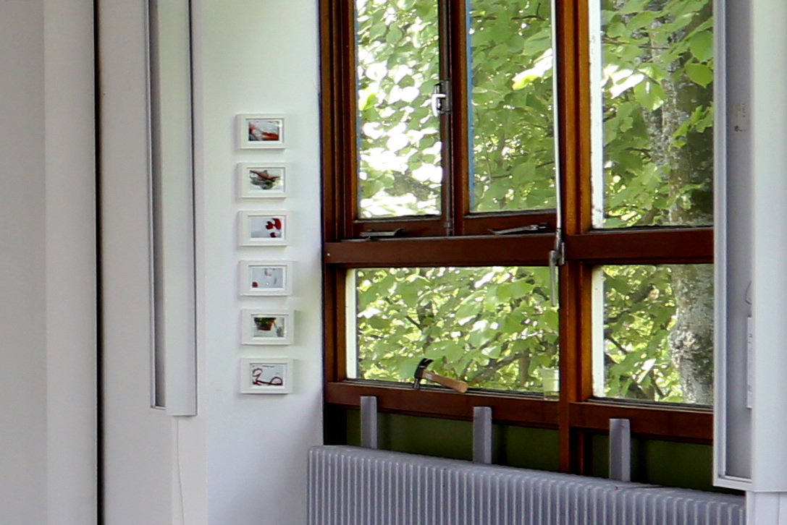
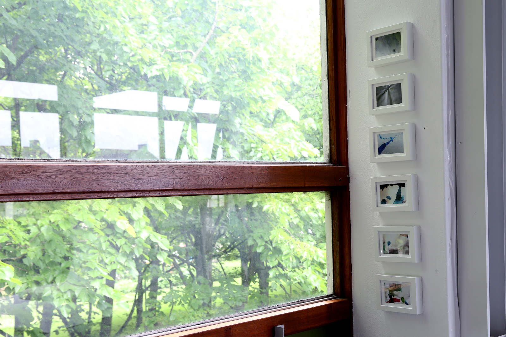

small civilizatory process #1 (pequeno processo civilizatório #1)
small civilizatory process #1
(pequeno processo civilizatório #1)
2017
série de 12 fotografias (a series of 12 framed pictures)
10 x 15 cm
um desenho por semana, 12 semanas: fotografei, imprimi e emoldurei os desenhos de minha filha durante os 3 meses de residência, hiperestetizando sua expressão no papel. é um trabalho sobre educação, cultura ocidental, sobre o projeto iluminista (one drawing in a week, 12 weeks: i framed, printed and reframed my daughter's drawings during the 3 months residency, hiperaestheticizing her expression on paper.it's a work on education, civilization, culture and western illuministic project).


2017. re: production. mothers in arts residency. amsterdam.